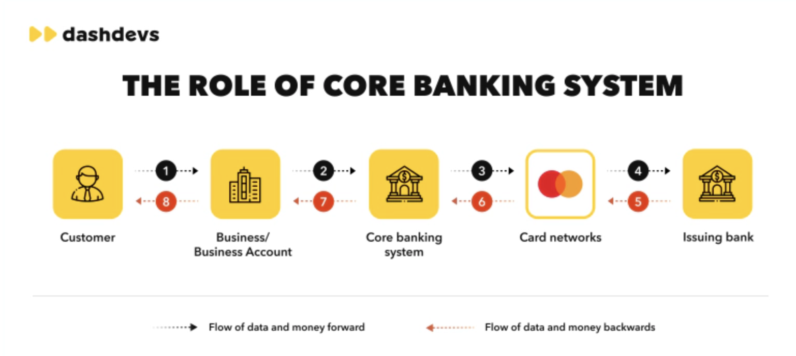
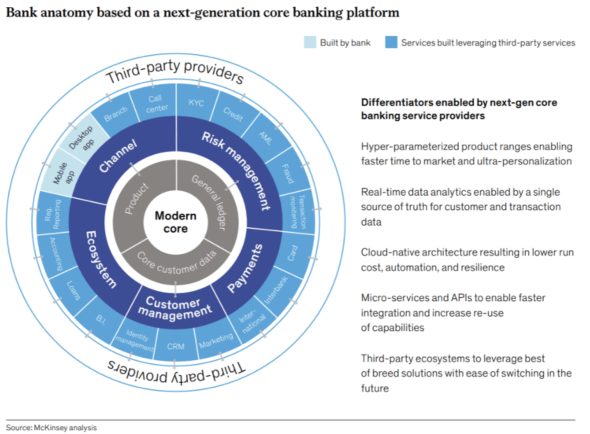

The Modern Banking Core#
Modern banking cores, designed around cloud-native and API-first architectures, are increasingly replacing legacy systems. These advanced cores empower financial institutions by enabling real-time processing, facilitating seamless integrations, and providing unmatched scalability. For banking executives, developers, and regulators, understanding the transformative potential of these systems, alongside their associated risks and opportunities, is critical for guiding strategic decisions in an evolving financial landscape.
Core banking systems are the backbone for modern banking operations, where both legacy banks and fintechs are transitioning toward cloud-native and modular architectures. This shift is critical to enable support for BaaS, real-time transactions, and embedded finance.
1. Empowerment through Modern Banking Cores#
Modern banking cores unlock capabilities that address some of the most pressing needs in financial services. Here are the primary areas of empowerment:
Scalability and Flexibility#
Cloud-native cores allow banks to scale rapidly to accommodate fluctuations in demand, including surges during peak times, by dynamically allocating resources. Such flexibility supports the diverse needs of retail, commercial, and institutional clients without compromising performance, even across global markets.
Real-Time Processing and Decision-Making#
Unlike legacy batch-processing systems, modern cores enable instantaneous updates to transactions, accounts, and customer interactions, enhancing transparency and trust. This real-time capability is vital for services like instant payments, fraud detection, and regulatory reporting, where delays could lead to financial and reputational risks. Real-time data feeds also provide institutions with current metrics and trends, supporting data-driven decision-making across operations, credit risk assessments, and customer service.
Enhanced Customer Experience and Personalization#
Modern cores facilitate seamless, personalized banking experiences across digital and in-person channels. With these cores, banks can offer tailored financial products, dynamic loan pricing, and predictive financial advice based on individual customer data. The flexibility to integrate with customer relationship management (CRM) systems and analytics platforms enables personalization, which is increasingly valued by customers and gives banks a competitive edge.
Data-Driven Security and Compliance#
With integrated cybersecurity protocols, real-time monitoring, and automated compliance checks, modern banking cores support security measures that protect against fraud, hacking, and regulatory breaches. AI-driven compliance tools, for example, can flag unusual activity patterns, potentially mitigating risks before they materialize. This proactive approach to compliance also simplifies the bank’s ability to adapt to evolving regulatory demands without significant operational disruptions.
Cost Efficiency and Operational Simplification#
Modern cores streamline banking operations, reducing reliance on costly on-premise hardware and decreasing manual, time-intensive tasks. Modular designs enable financial institutions to update or replace individual functions without requiring full system upgrades, cutting down on long-term maintenance costs and accelerating time-to-market for new services.
Platform for Innovation and Ecosystem Expansion#
The API-first architecture in modern cores facilitates partnerships with fintechs, tech companies, and third-party service providers, enabling embedded finance. By offering APIs, banks can leverage third-party innovations and integrate seamlessly with platforms like e-commerce sites or digital wallets, effectively transforming themselves into multi-faceted financial platforms that meet clients’ diverse financial needs.

2. Modern Core Components#
Cloud-Native Architecture: Ensures robust infrastructure capable of handling growing demands securely.
API-First Design: Allows easy integration with third-party fintech services, enabling banks to adopt new technologies and applications swiftly.
Modular Microservices: With modularity, banks can scale specific functions independently, supporting faster innovation and system resilience.
Data Analytics and AI Integration: Provides actionable insights, supports risk management, and personalizes customer interactions.
Security Layers: Incorporates cybersecurity measures aligned with regulatory standards to protect customer data and institutional assets.
3. Risks and Challenges of the Modern Core#
While the potential of modern banking cores is significant, there are critical risks and challenges that institutions must manage carefully to realize their value effectively:
Integration with Legacy Systems#
Transitioning from legacy systems, which often support mission-critical processes, poses both technological and operational challenges. Integrating new cores with older systems can lead to data compatibility issues, functionality gaps, and system inefficiencies, which may ultimately delay migration timelines and inflate costs. Data migration, in particular, requires meticulous planning, testing, and validation to prevent data loss or corruption that could impact operations and compliance.
Cybersecurity Threats and Data Vulnerability#
While cloud-native cores come with advanced security features, their distributed nature can create vulnerabilities to cyberattacks if not properly managed. With cyber threats constantly evolving, these systems demand robust, multi-layered security, continuous monitoring, and regular updates. Risks of data breaches, ransomware attacks, and insider threats require investment in both technology and cybersecurity talent, as well as compliance with stringent data protection regulations like GDPR and CCPA.
Regulatory Compliance and Complexity#
Financial regulations, such as anti-money laundering (AML) rules and customer data protection laws, vary by jurisdiction and change frequently. As a result, banks face a dual challenge: remaining agile to adapt to regulatory changes while ensuring compliance with all current regulations. The costs of non-compliance, both in financial penalties and reputational damage, necessitate ongoing regulatory monitoring and flexible system configurations that can adapt to regulatory changes without requiring major overhauls.
Operational Disruption and Change Management#
Migrating to a modern core is a complex, resource-intensive process that can disrupt regular operations. Staff training, process changes, and testing are required to ensure that the transition doesn’t negatively impact customer experiences or operational reliability. Effective change management, involving clear communication, stakeholder engagement, and phased rollouts, is essential to minimize resistance and ensure a smooth migration.
Talent Shortage and Skills Gap#
The rapid advancement of cloud-native and API-driven technologies has created a skills gap within financial services, with many institutions struggling to find talent proficient in both banking operations and modern technology architectures. High demand for skills in areas such as microservices development, cybersecurity, and AI-driven analytics means that competition for talent is fierce, pushing up hiring costs and, in some cases, delaying implementation timelines.
Cost and ROI Management#
While modern banking cores promise long-term cost savings, the upfront investment can be substantial. Institutions face costs related to technology procurement, system integration, staff training, and potential downtime during implementation. Ensuring a strong return on investment (ROI) requires careful planning, selection of the right vendors, and alignment with the institution’s strategic priorities. Achieving ROI may also depend on the institution’s ability to leverage the new system to create additional revenue streams or cost efficiencies across the organization.
4. Implications and Value Creation#
Financial Inclusion and Customer-Centric Services: By reducing transaction costs and enabling personalized offerings, modern cores foster inclusivity, extending services to underserved demographics and enhancing customer satisfaction.
Innovation Acceleration: APIs and open banking standards allow quick adoption and offering of innovative services, such as integrated digital wallets, and real-time lending decisions, without requiring extensive in-house development.
Operational Agility: Modular and scalable designs allow banks to adapt to market changes swiftly, aligning their offerings with evolving customer demands and regulatory requirements.
New Revenue Streams: Opportunities such as embedded finance, DeFi (Decentralized Finance) integration, and AI-driven product recommendations open up new avenues for revenue growth, enabling banks to remain competitive against non-traditional financial platforms.
5. Convergance of the Past and the Present#
Modern banking cores represent a significant leap forward in the design and function of core banking infrastructure, enabling financial institutions to drive operational efficiency, security, and innovation. By embracing these architectures, banks can navigate regulatory landscapes, mitigate operational risks, and meet the needs of modern customers. Although the journey to modernization entails substantial risks and costs, the benefits—ranging from increased agility and cost savings to enhanced customer value—position banks to remain relevant and resilient in a rapidly transforming financial landscape.
For decision-makers, understanding the delicate balance of these cores’ transformative power and associated risks is essential for achieving sustainable growth and maintaining a competitive edge.
6. How Modern Banking Cores Shape the Future of Banking#
Modern banking cores are catalysts for the future of digital-first, autonomous, and inclusive financial ecosystems. By providing infrastructure that allows banks to operate autonomously, adaptively, and inclusively, these cores create a foundation that not only responds to current needs but anticipates future transformations. Below are key pathways through which modern cores will enable autonomous banking, evolve Community Development Financial Institutions (CDFIs), and drive meaningful financial inclusion. Autonomous Banking Systems
Autonomous banking systems represent the next frontier in banking, where AI-driven automation, data intelligence, and machine learning empower banks to operate with minimal human intervention. Modern cores are crucial in this journey toward autonomy for the following reasons:
Real-Time Data Processing and Decision-Making#
Modern cores’ real-time data capabilities enable banks to execute faster, data-informed decisions across lending, fraud detection, and customer service, often automatically. With autonomous transaction monitoring and customer service interfaces powered by AI, banks can preemptively address issues such as fraudulent transactions, compliance anomalies, and account-specific queries without the need for manual intervention.
AI-Driven Risk Management and Compliance#
AI-integrated cores can identify, flag, and even resolve compliance issues autonomously. For example, using natural language processing and pattern recognition, an AI within the core system could autonomously detect suspicious activity patterns or non-compliant transactions and either alert compliance officers or take predefined actions. This capability not only improves efficiency but also helps reduce human error, which is critical in regulatory environments.
Automation of Customer Interactions and Services#
Autonomous banking envisions a scenario where AI-driven services manage most of the routine and complex customer interactions. Chatbots, voice assistants, and virtual agents already handle a large volume of customer service queries. Advanced machine learning algorithms in modern cores could enable predictive account management, where the system anticipates and addresses customer needs—such as personalized loan recommendations or automatic fee waivers based on transactional history—thereby improving customer experience and retention.
Self-Optimizing Infrastructure#
Through data analytics and machine learning, modern cores have the capacity to monitor and optimize their own performance. Such cores can autonomously scale processing power during peak hours or adapt security protocols when facing potential threats, effectively future-proofing banks against fluctuations in demand and new threats.

7. Enabling Next-Generation CDFI Models via a Modern Core#
Community Development Financial Institutions (CDFIs) play a unique role in promoting financial inclusion, often serving underbanked communities with limited access to mainstream financial services. Modern banking cores provide a pathway to transforming CDFIs into fintech-powered entities, thus extending their reach, enhancing efficiency, and fostering financial resilience within communities.
Enhanced Risk Assessment for Low-Income Lending#
AI and data analytics within modern cores can analyze non-traditional data points, such as utility bill payments and rental history, to assess the creditworthiness of individuals with little to no credit history. This expanded risk assessment allows CDFIs to offer more inclusive lending solutions tailored to low-income individuals or small business owners who might not meet traditional credit criteria.
Embedded Financial Literacy and Support Programs#
With a modern core, CDFIs can integrate financial literacy tools directly into their digital platforms. For example, through API connections with educational fintechs, CDFIs can offer tutorials on budgeting, debt management, and credit-building. Additionally, AI-driven personal finance tools can help customers make informed financial decisions, empowering them to achieve financial independence.
Operational Collaboration and Ecosystem Partnerships#
API-first cores facilitate partnerships between CDFIs and third-party providers, allowing them to extend service offerings beyond traditional banking. Partnerships with non-profits, governmental organizations, and fintechs can enable CDFIs to provide services such as micro-insurance, prepaid debit accounts, and educational loans—creating a robust ecosystem that maximizes social impact.
8. Driving Financial Inclusion and Impact#
Modern banking cores are a powerful engine for financial inclusion, enabling banks and CDFIs alike to offer services that cater to underserved and unbanked populations. By fostering accessible, affordable, and customer-centric services, modern cores create a foundation for economic empowerment on a global scale.
Affordable Access to Banking Services#
Cloud-native architectures significantly reduce the overhead costs of banking infrastructure, enabling institutions to lower the cost of services. This makes it more feasible to offer affordable accounts and loans, particularly to low-income customers. Additionally, digital-first offerings reduce the need for physical branches, which are often absent in rural or underserved urban areas, expanding the reach of banking services.
Flexible, Mobile-First Banking for Underserved Populations#
With mobile penetration far surpassing traditional banking access in many regions, modern cores enable financial services that can be delivered directly through mobile apps. Mobile-first accounts, micro-savings, and mobile loans empower underserved populations to manage their finances independently, providing both convenience and control. This also facilitates the collection of behavioral data that can improve customer insights, helping banks adapt their services to meet community-specific needs.
Localized, Culturally-Aware Financial Products#
The modular design of modern cores allows banks to tailor products to specific demographics or cultural needs, which is essential for fostering financial inclusion in diverse communities. For instance, banks can create savings products that align with local customs, offer multilingual support, or provide community-based lending options that cater to group-oriented societies.
Accelerated Access to Embedded Financial Services#
Through embedded finance, institutions can deliver financial services through non-banking platforms such as retail, e-commerce, and social media. Modern cores make it possible for banks to extend services to customers who may otherwise avoid traditional banking channels. For example, an agricultural cooperative could provide micro-loans directly through an online marketplace platform, allowing rural farmers to access finance without requiring a bank account.
Data-Driven Financial Inclusion Metrics#
Advanced analytics capabilities in modern cores allow institutions to track and measure their impact on financial inclusion. This enables banks and CDFIs to evaluate the effectiveness of their services in terms of reach, retention, and financial health improvements within communities. Such data insights empower institutions to refine their products and strategies to better serve financially marginalized groups.
Conclusion#
The modern banking core is a re-imagined foundation for a future-ready banking ecosystem, enabling autonomous operations, supporting CDFI transformation, and driving financial inclusion. This empowers institutions to meet today’s customer needs while anticipating tomorrow’s demands. By modernizing, banks can deepen their social impact, extend their market reach, and solidify their relevance in a digital-first world.
Embracing modern cores, financial institutions can create a future where banking is efficient, secure, accessible, and equitable, benefiting communities, economies, and the industry. Fintech-driven models and modern cores are paving the way for an inclusive, resilient, and scalable future, extending financial access to underserved communities and enhancing global financial health. By prioritizing innovation, financial institutions can play a central role in a sustainable and inclusive financial ecosystem, creating value for all stakeholders.
Sources:#
https://advapay.eu/core-banking-what-is-evolution-key-components-types-challenges-opportunities/
https://medium.com/fintech-in-depth/core-banking-systems-primer-a2d26919f3eb
https://www.fintechfutures.com/2024/08/the-unbundling-of-core-banking/
https://www.americanbanker.com/list/5-things-to-keep-in-mind-when-choosing-a-core-banking-system
https://www.pehub.com/nordic-capital-bets-big-on-core-banking-systems/
https://www.prove.com/blog/core-platforms-for-digital-only-banks-where-are-the-original-gangsters
https://www.fintechfutures.com/2018/09/cfcu-community-credit-union-in-tech-revamp-with-fiserv/
https://inoxoft.com/blog/10-requirements-for-building-digital-banking-architecture/
https://sdk.finance/saas-vs-baas-vs-banking-software-license-which-is-better/